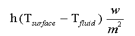

Solve a conduction problem involving a bar with internal heat source and cooling at the surface by a fluid bath. Do not take advantage of any symmetry in your solution. Use symmetry to check your solution. Within the bar the conductivity (k) can be assumed constant and the conduction equation is:
Surface Heat flux surface is given by the expression:

Use the following values for your solution:
Tfluid = 300K
h = 25,000 w/m2
k = 85 w/m/K
q = 3.0e9 w/m3.
Assume an infinite length bar (2-D problem), with a 0.004m by 0.03m rectangular cross-section.
To solve the problem divide the bar into a 10x10 array of equal
sized
volumes. Begin by solving two related problems to test your program.
Assume
that the origin of an x-y coordinate system is located at the center of
the bar. For the first problem allow the above heat flux condition to
the
liquid at x = ±0.002m, but set the heat flux to zero at the y =
±0.015 m surfaces (adiabatic boundary condition). For this
situation
the temperature is independent of y and you can compare your
computational
results against an analytic solution for T(x). Give me a plot comparing
the results at the centers of 10 volumes in the x direction to the
analytic
results. Confirm that there is no change of temperature in the y
direction. Provide me with your derivation of the analytic
solution or a reference to a book containing the solution.
With that done shift the 1-D problem by 90 degrees. Use the above heat flux condition to the liquid at y = ±0.015 m, and set the heat flux to zero at the x = ±0.002m surfaces (adiabatic boundary condition). Again provide me with a plot with both finite volume and analytic results.
Now that you have confidence in your program, run the full 2-D problem with heat flux to the liquid on all four surfaces. Provide me with a clear printout of temperature at the center of all volumes. I prefer a file with one line for each y row of volumes, and ten numbers in each line corresponding to the ten volumes in the x direction. Give me two digits to the right of the decimal for your numbers (e.g. 910.11, 1011.23).
Clearly write out the finite volume equations that you use, including special cases at boundaries. Submit your write-up, plots, and program to the drop box on ANGEL. To make my life easier, either imbed everything in a single Word Processor file (Word, WordPerfect, or FrameMaker), or collect your material in a single archive file using Winzip, zip, pkzip, or tar.
The Fine Print:
To make my grading easier, I expect you to adhere to good programming practices. The main program should just be an outline. Create separate subprograms to initialize terms in your linear equations, to solve the equations, and to output the solution. Parameters such as conductivity, volumetric heat source, number of mesh cells, and mesh cell sizes should all be stored in variables that are initialized once in your program. Include adequate comments describing the purpose of each subprogram, defining all subprogram arguments, and describing all key steps in the program. If you are programming in Fortran 90, use the new "KIND" attribute to specify the precision of your arithmetic. Define the KIND with the Fortran 90 intrinsic function "selected_real_kind". I recommend that you use my module named "IntrTypeM.f90" to make this definition, and a similar definition for integers.
Whenever you are testing a numerical solution method, your first method for solving linear equations should be direct (Gauss Elimination or Lower/Upper Decomposition). This minimizes opportunities for error because of simplicity of the matrix data structure, and availability of tested solution subprograms. In fact, you should almost never write subprograms to solve linear equations. Plenty of very good public domain software is available for linear algebra (e.g. NetLib). For this homework feel free to use the same subprograms that I have called from my sample main program.
This assignment may seem a little frightening. However, I've shown you most of my program in the links above. The coding that I haven't shown you requires less than 100 lines of Fortran to generate the matrix and right hand side resulting from the finite volume equations. You may use any of the coding linked from this page as a start for your solution, including a template for the SetEqn module.
Selecting a Programming Language:
You should talk to your research advisor. If he or she states that you must use C for your research or if C is the dominant language for applications in your research area, then use it for this and other programs in this class. If this is not the case, regardless of previous programming experience, I recommend that you work in Fortran 90 or the latest standard Fortran 95. Yes, some professor has probably told you that Fortran is a dead language. I was told the same thing in 1968, and have heard it frequently since, so I don't take such statements too seriously. Fortran has always been designed specifically for Scientific and Engineering programs. This is particularly evident now in the support for array operations in the language structure and intrinsic function set, and related support for high performance computing. In addition, more Fortran public domain equation solution subprograms will be available to you than if you use C.
If you want a free Fortran 95 Compiler and have Linux check this Intel
site. If you want a free Fortran 95 Language Reference Guide
check this other Intel
page.